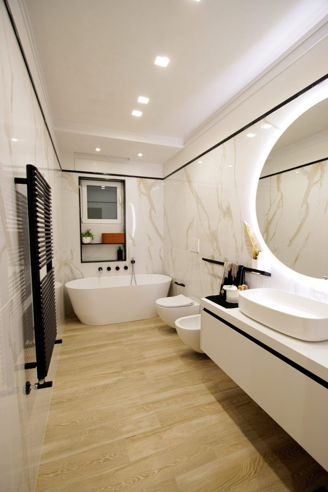

01
Pavimenti, rivestimenti e piatti doccia
Ambienti veri, dove nessun angolo è a novanta gradi. Tagliamo e montiamo sul posto pavimenti, rivestimenti a parete e piatti doccia su misura, con le fughe che filano diritte e le pendenze che scaricano davvero.
Come lo facciamo : Pavimenti, rivestimenti e piatti doccia